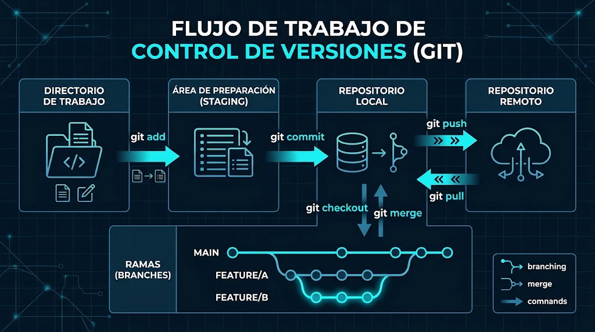
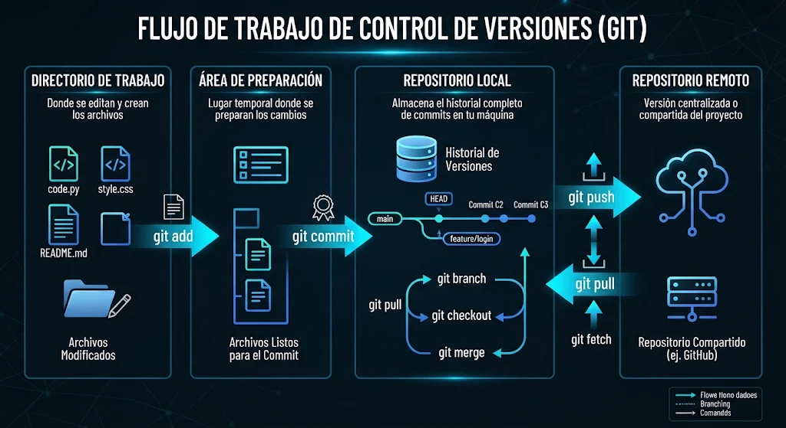
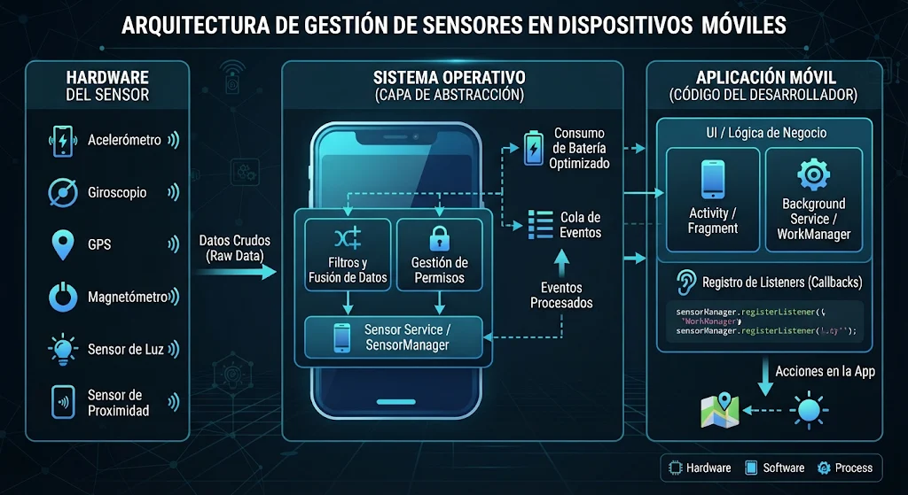
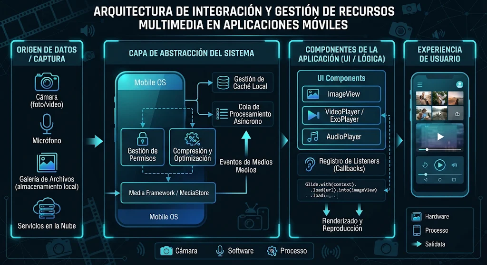
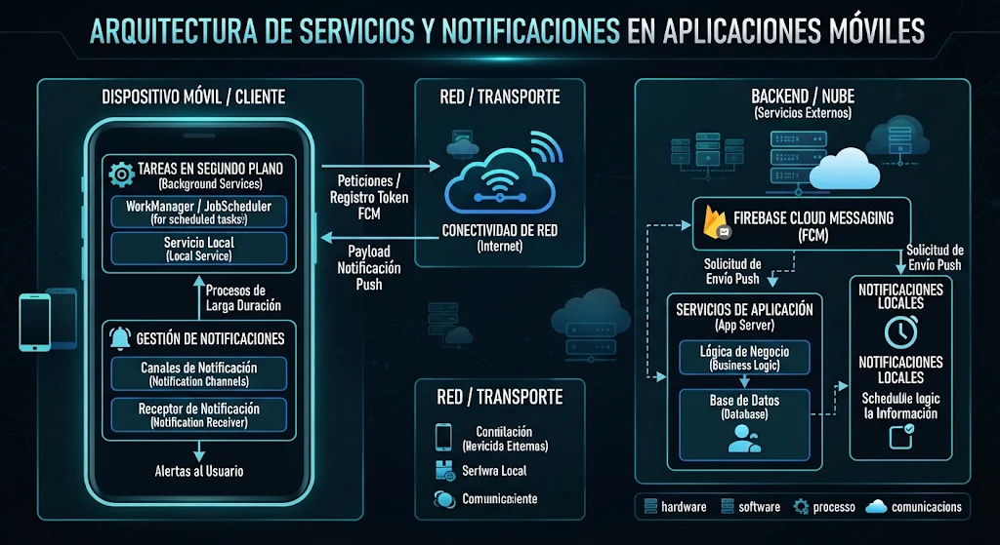
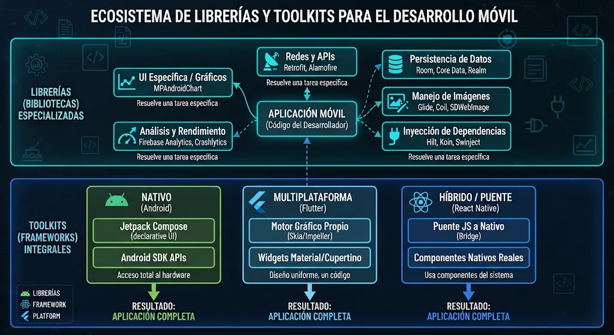
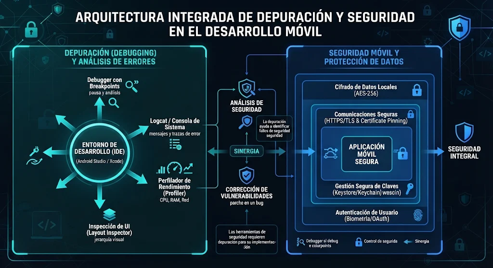

Arquitectura Avanzada de Aplicaciones Móviles
Un análisis profundo de los pilares técnicos para construir software móvil de clase empresarial, escalable y seguro.
Control de Versiones
1. Definición
Es un sistema que registra los cambios realizados en un archivo o conjunto de archivos a lo largo del tiempo, permitiendo recuperar versiones específicas más adelante y colaborar de forma ordenada entre múltiples desarrolladores sin sobrescribir el trabajo de otros.
2. ¿Cuáles son? (Sistemas Principales)
- Git: Sistema de control de versiones distribuido, rápido y el estándar de la industria actual.
- Subversion (SVN): Sistema centralizado donde un servidor principal almacena todas las versiones y los clientes se conectan a él.
- Mercurial: Sistema distribuido alternativo enfocado en la simplicidad y el alto rendimiento con proyectos grandes.

Figura 1: Esquema visual del flujo de trabajo distribuido en Git.
3. Características, Ventajas y Desventajas
| Sistema | Características | Ventajas | Desventajas |
|---|---|---|---|
| Git | Descentralizado, cada usuario tiene el historial completo en local. | Trabajo offline total, ramificación (branching) potente y rápida. | Curva de aprendizaje alta para comandos avanzados. |
| SVN | Centralizado, base de datos única ubicada en un servidor. | Control estricto de permisos por directorios; fácil inicio. | Dependencia total del servidor central; operaciones lentas en red. |
| Mercurial | Descentralizado, basado en Python con sintaxis intuitiva. | Alto rendimiento y manejo limpio de archivos binarios. | Menor ecosistema y adopción en comparación con Git. |
4. Funcionamiento
Funciona mediante la gestión de instantáneas (snapshots) o registro de diferencias (deltas). En sistemas como Git, los archivos pasan por tres estados fundamentales: el Working Directory (modificados), el Staging Area (preparados) y el Repository (confirmados mediante commits).
5. Uso en el Rastreo y Gestión de Cambios
Cada modificación recibe un identificador único (hash SHA-1). Esto permite auditar quién hizo cada cambio, comparar diferencias línea por línea (diffs), revertir errores críticos y aislar desarrollos paralelos mediante ramas (branches) para luego integrarlos con merge.
6. Ejemplos Prácticos
Al desarrollar una pantalla de login en Android Studio, se ejecuta git add . para rastrear los archivos nuevos, git commit -m "Agrega vista de login" para guardar la instantánea local, y git push origin main para sincronizarla con el equipo en GitHub o GitLab.
Persistencia y Acceso a Datos
1. Definición y Características
La persistencia es la capacidad de una aplicación para retener información de forma duradera en un medio de almacenamiento no volátil y recuperarla posteriormente, incluso tras cerrar la app o apagar el dispositivo. Sus características clave son la integridad, durabilidad, seguridad y eficiencia de consulta.
2. Formas de Persistencia en Dispositivos Móviles
- Archivos: Lectura y escritura directa en la memoria interna o externa del dispositivo (archivos de texto plano, JSON, XML o binarios).
- Bases de Datos Locales: Motores relacionales o NoSQL incrustados en el teléfono para estructurar datos y realizar consultas complejas offline (ej. SQLite, Room, Realm).
- Remotas mediante Servicios Web: Almacenamiento centralizado en servidores en la nube, consumido a través de internet mediante APIs REST o GraphQL.

Figura 2: Arquitectura de persistencia local (SQLite/Room) y sincronización remota.
3. Tipos de Datos Almacenables según la Persistencia
- Preferencias simples (Key-Value): Configuraciones de usuario, tokens de sesión y banderas booleanas (SharedPreferences / DataStore).
- Archivos planos y multimedia: Documentos PDF, imágenes capturadas, logs y caché en formato JSON.
- Datos relacionales estructurados: Registros transaccionales, catálogos de productos e historial de usuarios en tablas SQLite o servidores remotos.
4. Mecanismos de Control de Acceso a Medios Persistentes
- Biblioteca de Clases: APIs nativas del SDK (como
java.iooFileen Kotlin/Swift) para manipular flujos de entrada/salida (Streams) de archivos. - Clases de SQLite: Interfaces como
SQLiteOpenHelperyCursorpara crear esquemas y ejecutar consultas SQL puras directamente. - Mapeo Relacional de Objetos (ORM): Librerías como Room (Android) o CoreData (iOS) que abstraen el código SQL y convierten tablas de la base de datos en objetos nativos del lenguaje.
5. Proceso de Autenticación y Consumo de Servicios Web
La app envía peticiones HTTP/HTTPS (GET, POST, PUT, DELETE) usando clientes como Retrofit o Ktor. Para proteger los datos, el usuario se autentica primero enviando sus credenciales para recibir un token temporal (como JWT o mediante OAuth 2.0), el cual se adjunta en la cabecera (Authorization: Bearer <token>) de cada petición posterior.
6. Ejemplos
Guardar el modo oscuro seleccionado en SharedPreferences; almacenar mensajes de chat en una base de datos local Room para leerlos sin internet; y sincronizar dichos mensajes con una API REST en la nube mediante Retrofit cuando vuelve la conexión.
Gestión de Sensores
1. Definición de Sensores
Son componentes de hardware integrados en la placa del dispositivo móvil capaces de detectar magnitudes físicas o químicas del entorno (movimiento, orientación, luz, ubicación) y transformarlas en señales digitales que el software puede interpretar.
2. Tipos de Sensores en Dispositivos Móviles
- Sensores de Movimiento: Acelerómetro (mides fuerzas de aceleración en ejes X, Y, Z), giroscopio (mide velocidad de rotación) y podómetro (conteo de pasos).
- Sensores de Posición: GPS (geolocalización satelital), magnetómetro (brújula digital mediante campo magnético terrestre) y sensor de proximidad (apaga la pantalla durante llamadas).
- Sensores Ambientales: Fotómetro o sensor de luz ambiental (ajusta el brillo automático), barómetro (presión atmosférica y altitud) y termómetro interno.

Figura 3: Captura y procesamiento de datos provenientes de los sensores del dispositivo.
3. Proceso de Gestión de Sensores
- 1. Habilitación: Declarar los permisos necesarios en el manifiesto (ej.
ACCESS_FINE_LOCATION), instanciar el gestor del sistema (SensorManager) y verificar que el hardware exista en el equipo. - 2. Obtención: Registrar un Listener (
SensorEventListener) definiendo la frecuencia de muestreo para recibir los eventos en tiempo real cuando cambian los valores físicos. - 3. Procesamiento de Información: Aplicar filtros matemáticos (como filtros paso bajo para eliminar ruido) y traducir las coordenadas o valores crudos en acciones de la interfaz (ej. rotar un mapa o contar un paso). Es vital desregistrar el listener al pausar la app para ahorrar batería.
Uso de Recursos Multimedia
1. Definición
Es la integración y gestión de contenidos visuales, sonoros e interactivos dentro de una aplicación móvil para comunicar información de manera atractiva y mejorar la experiencia del usuario (UX).
2. Tipos de Recursos Multimedia Aplicables
- Imágenes: Mapas de bits comprimidos (PNG, JPEG, WebP) y gráficos vectoriales escalables sin pérdida de calidad (SVG / Vector Drawables).
- Audio: Efectos de sonido cortos (WAV, OGG) y pistas musicales o podcasts en streaming (MP3, AAC).
- Video: Clips promocionales, tutoriales o transmisiones en vivo en formatos optimizados (MP4, H.264, WebM).
- Animaciones y Elementos Dinámicos: Transiciones entre pantallas, microinteracciones y animaciones vectoriales complejas renderizadas por código (como archivos JSON de Lottie).

Figura 4: Organización e integración de activos gráficos, audio y video en proyectos móviles.
3. Estructura de Proyectos donde se Almacenan
Los proyectos móviles separan el código lógico de los activos multimedia mediante directorios especializados. En Android, se alojan dentro de res/drawable/ (imágenes y vectores), res/mipmap/ (iconos de la app para distintas densidades de pantalla), res/raw/ (audios y videos locales sin compresión adicional) y assets/ (archivos externos o fuentes).
4. Componentes de Software para su Uso
Se emplean controles de interfaz como ImageView y VideoView, motores de reproducción multimedia como MediaPlayer y ExoPlayer (para streaming adaptativo), y librerías de gestión de memoria y caché como Glide o Coil que evitan desbordamientos de memoria (OutOfMemoryError) al cargar imágenes pesadas.
Servicios y Notificaciones
1. Definición
Los servicios son componentes de aplicación que realizan operaciones de larga duración sin ofrecer una interfaz gráfica al usuario. Las notificaciones son mensajes emergentes que el sistema operativo muestra fuera de la interfaz de la app para alertar al usuario sobre eventos relevantes o recordatorios.
2. Tareas en Segundo Plano en Aplicaciones Móviles
Son procesos ejecutados de forma asíncrona fuera del hilo principal (UI Thread) para evitar que la pantalla se congele, o incluso cuando la aplicación está cerrada. Se utilizan para sincronizar datos con servidores, subir copias de seguridad o procesar archivos pesados respetando las restricciones de ahorro de batería del sistema.
3. Tratamiento de Notificaciones
Las notificaciones se clasifican en locales (programadas por la propia app en el dispositivo, como una alarma) y remotas o Push (enviadas desde un servidor externo hacia el dispositivo mediante servicios en la nube). En sistemas modernos requieren canales configurables (Notification Channels) para que el usuario decida su prioridad y sonido.

Figura 5: Arquitectura de tareas en segundo plano y mensajería push en la nube.
4. Proceso de Implementación
- Proveedores de Contenido (Content Providers): Se crea una clase que hereda de
ContentProvider, se define una URI única y se implementan los métodos CRUD (query,insert,update,delete) para compartir datos de forma segura con otras aplicaciones (ej. acceder a la agenda de contactos). - Tareas en Segundo Plano: Se definen clases
Workermediante la arquitectura WorkManager, estableciendo restricciones (como ejecutar solo si hay Wi-Fi y batería suficiente) y encolando la tarea en el sistema. - Notificaciones: Se solicita el permiso en tiempo de ejecución (
POST_NOTIFICATIONS), se registra unNotificationChannely se construye la alerta medianteNotificationCompat.Builderasignando título, texto, icono y acción al pulsar.
5. Servicios de Cómputo en la Nube Aplicables
Plataformas como Firebase (Google), AWS Amplify (Amazon) y Microsoft Azure Mobile Apps ofrecen Backend-as-a-Service (BaaS), integrando envío masivo de notificaciones push (Firebase Cloud Messaging), bases de datos en tiempo real, autenticación y funciones sin servidor (Cloud Functions).
Librerías y Toolkits para Desarrollo Móvil
1. ¿Qué es una Librería y qué es un Toolkit?
- Librería (Biblioteca): Es una colección de clases, funciones y código precompilado diseñado para resolver un problema técnico puntual (ej. hacer peticiones de red o parsear JSON). El desarrollador mantiene el control del flujo de la app y llama a la librería cuando la necesita.
- Toolkit (Kit de Herramientas): Es un ecosistema integral que incluye compiladores, depuradores, motores de renderizado y catálogos completos de componentes visuales (widgets) para construir toda la interfaz y estructura de una aplicación desde cero.

Figura 6: Ecosistema de librerías especializadas y toolkits multiplataforma.
2. Librerías de Funciones Especializadas
- Redes y APIs: Retrofit y OkHttp (consumo de servicios REST) o Alamofire en iOS.
- Serialización de Datos: Gson, Moshi o Kotlinx Serialization para convertir objetos a JSON y viceversa.
- Inyección de Dependencias: Dagger Hilt o Koin para desacoplar la arquitectura del código.
- Imágenes y Gráficos: Glide, Coil y MPAndroidChart (para gráficas estadísticas).
3. Diferenciación de Toolkits Aplicables
| Toolkit / Framework | Lenguaje | Enfoque y Diferencia Clave |
|---|---|---|
| Jetpack Compose / SwiftUI | Kotlin / Swift | Toolkits declarativos 100% nativos para Android e iOS respectivamente; máximo rendimiento y acceso directo al hardware. |
| Flutter | Dart | Toolkit multiplataforma de Google que dibuja sus propios widgets usando un motor gráfico propio (Impeller/Skia), logrando diseño idéntico en iOS y Android. |
| React Native | JavaScript / TypeScript | Toolkit multiplataforma de Meta que traduce componentes web de React a vistas nativas reales del sistema operativo móvil. |
Depuración y Seguridad
1. ¿Qué es la Depuración y la Seguridad?
- Depuración (Debugging): Es el proceso sistemático de detectar, aislar, analizar y corregir errores de sintaxis, fallos lógicos (bugs), cierres inesperados (crashes) o cuellos de botella en el rendimiento de una aplicación antes de su publicación.
- Seguridad Móvil: Es el conjunto de prácticas, cifrados y controles implementados para proteger los datos sensibles almacenados en el dispositivo, asegurar las comunicaciones por red (HTTPS/Certificate Pinning) y evitar la ingeniería inversa o el acceso no autorizado.

Figura 7: Inspección de código, análisis de memoria y seguridad en entornos móviles.
2. Herramientas de Depuración en el Entorno de Desarrollo
- Debugger y Breakpoints (Puntos de Interrupción): Permiten detener la ejecución del programa en una línea exacta de código para avanzar paso a paso e inspeccionar o modificar el valor de las variables en tiempo real.
- Logcat / Consola de Sistema: Visor en tiempo real de los registros del sistema operativo, mensajes de depuración (
Log.d) y trazas de errores (Stack Traces) cuando ocurre una excepción. - Android Profiler / Xcode Instruments: Herramientas visuales para monitorear el consumo de CPU, fugas de memoria RAM (Memory Leaks), tráfico de red y gasto energético de la batería.
- Layout Inspector: Permite examinar la jerarquía visual de la interfaz en 3D para corregir elementos desalineados o superpuestos.
Referencias Bibliográficas
- Android Developers. (2026). Guía oficial de arquitectura, sensores, persistencia y seguridad en aplicaciones móviles. Recuperado de developer.android.com
- Chacon, S., & Straub, B. (2026). Pro Git: Control de versiones distribuido. Apress / Git SCM. Recuperado de git-scm.com
- Flutter Documentation. (2026). Arquitectura de toolkits multiplataforma y servicios en la nube. Recuperado de docs.flutter.dev
- OWASP Foundation. (2026). OWASP Mobile Application Security Verification Standard (MASVS). Recuperado de mas.owasp.org